JB 3D tests
Three early tests of spinning, zoomable 3D glass for the site. Open one, drag to spin, double-tap to zoom in on a detail, pinch to get closer. Works on phone.
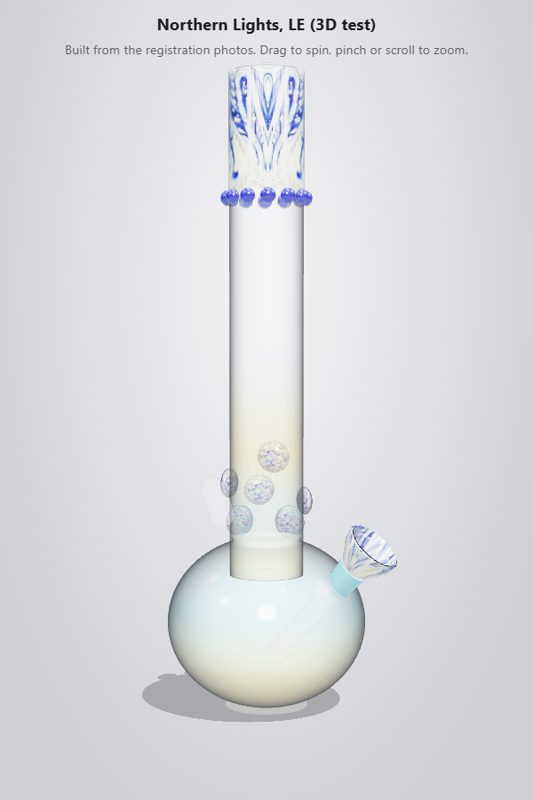
Northern Lights (LE)
Built in code from the registration photos: clear glass, real crown wrap, cobalt dot ring, crisp dichroic marbles. Light and fast.
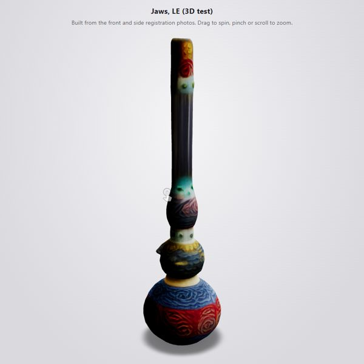
Jaws (LE)
AI model from the front and side photos. Shape and wraps hold up; the clear neck went dark from the photo backdrop.
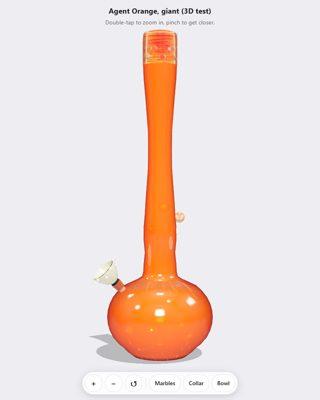
Agent Orange (giant)
Built in code from the studio shoot like Baker: true proportions, orange glass, each marble mapped from its own hi-res close-up.
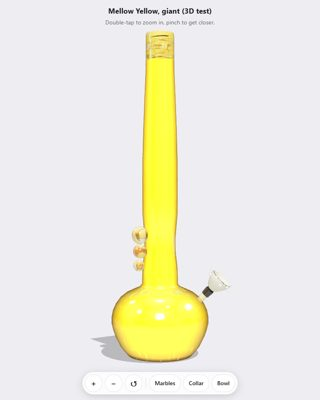
Mellow Yellow (giant)
Built in code from the studio shoot: 64 in, yellow glass, the cobalt and fumed marbles from their own hi-res close-ups.
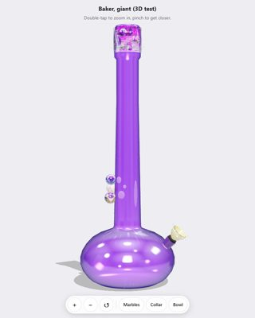
Baker (giant)
Rebuilt in code from the studio shoot: straight neck, true proportions, purple glass, and the real marbles photographed onto their faces.
Limited Edition
The 15-inch LE Baker Classics and specials. Built automatically from each piece's photo: the shape measured off the cutout, the photo wrapped onto the glass, the marbles that stand proud as their own crops.
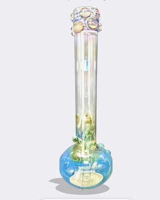
Bubble H@sh
Front matches the photo: amber bubble crown, green accent marbles at the neck. Back mirrored.
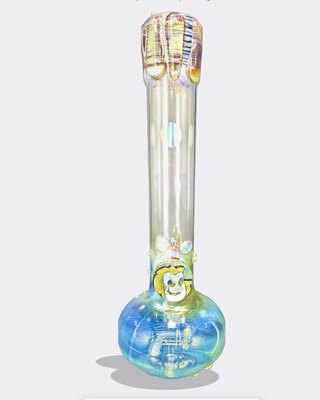
Jester Bloom
Front matches: striped crown, jester figure on the neck. Back mirrored.
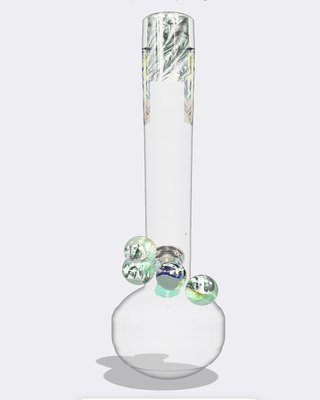
Knuckle Sandwich
Front matches: blue fume crown, the four big dichroic knuckle marbles stand proud. Back mirrored.
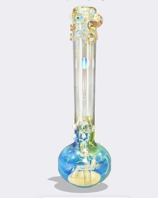
Miss Havisham
Front matches: crown of amber and opal marbles, green-gem accent at the neck. Back mirrored.
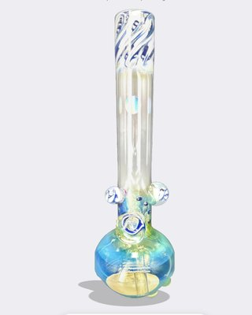
Nazarre
Front matches: blue swirl mouthpiece, two clear side marbles, blue dot accents. Close up the side marbles' outer rims are a flat pale fill (the photo only shows their inner half). Back mirrored.
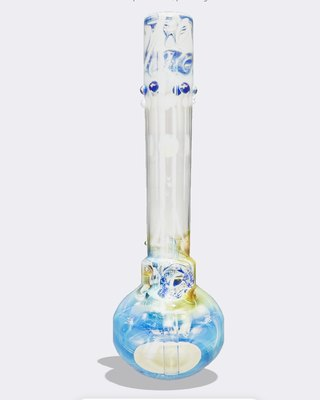
Ol' Blue Eyes
Front matches: blue swirl mouthpiece, cobalt dot ring, the big dichroic eye marble. That marble faces the camera, so it is part of the wrapped photo rather than a raised sphere. Back mirrored.
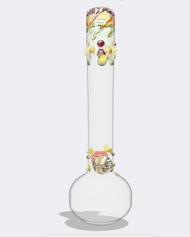
Rasta Dancer
Front matches: red/gold/green mouthpiece and dot ring, the portrait medallion on the neck. Back mirrored.
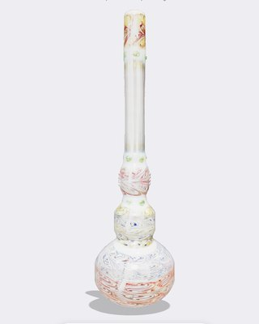
Jaws
Front from the photo; back mirrored from it.
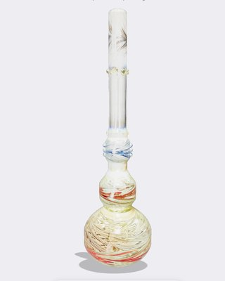
Norma Desmond
Front from the photo; back mirrored from it.
Planet Nugg NY Official Launch
Not built: a horizontal sculpted hand pipe, not a round Baker Classic body, and the only photo is one small side view (746x269 px). Needs its own model or more angles.
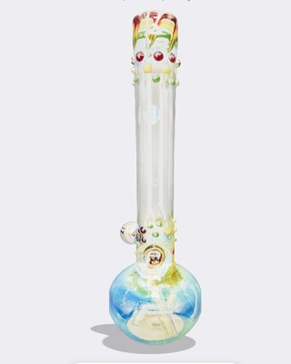
Trenchtown Rock
Front from the photo; back mirrored from it.
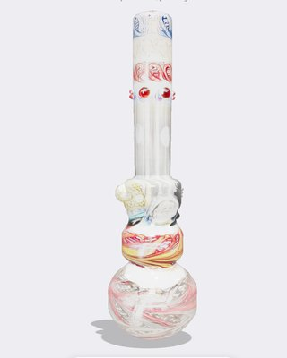
The Chong B0ng
Front from the photo; back mirrored from it.
Original Series
The 15-inch Original Series Baker Classics, built the same way.